11 2D特征框架（feature2d模块）
本章后面要用到一个小工具：把 n×2 的点坐标转成 OpenCV 要的 CV_32FC2 Mat。
一幅图像中总存在着其独特的像素点，这些点可以被认为是这幅图像的特征，常称之为特征点。在计算机视觉领域中，特征点概念已经得到了广泛的应用， 包括目标识别、 图像配准、 视觉跟踪、 三维重建等。
特征点中包含角点和关键点。其中角点的数学描述，包含如下有几种：
- 一阶导数(即灰度的梯度)的局部最大所对应的像素点；
- 两条及两条以上边缘的交点；
- 图像中梯度值和梯度方向的变化速率都很高的点；
- 角点处的一阶导数最大，二阶导数为零，指示物体边缘变化不连续的方向。
较之于角点，关键点是更加抽象的概念，一般而言指的是对于图像分析问题起着重要作用的点。在提取关键点时，边缘应该作为一个重要的参考依据，但一定不是唯一的依据，只要对分析特定问题有帮助的点都可以称其为关键点。
基于特征点可以做图像匹配，即寻找两幅图像之间的特征点的对应关系，进而确定两幅图像的一些空间位置关系。特征点匹配的大致步骤为：
1、检测子（detector）提取：在两张待匹配的图像中寻找那些最容易识别的像素点(角点)，比如纹理丰富的物体边缘点等。其提取方法有SIFT算法、Harris算法、FAST算法。
2、描述子（descriptor）提取：对于检测出的角点，用一些数学上的特征对其进行描述，如梯度直方图，局部随机二值特征等。其提取算法有邻域模板匹配、SIFT特征描述子、ORB特征描述子。
3、匹配：通过各个角点的描述子来判断它们在两张图像中的对应关系。常用方法有暴力匹配、KD树等。
11.1 角点检测基本思想
确定一个尺寸固定的滤波器 \(W\) 并放置在图像上，而后沿任意方向滑动 \(W\)，并计算滑动前后滤波器覆盖像素的滤波输出值。如果在任意方向上滤波器滑动前后的两个滤波输出值都有着较大变化，那么可以认为滤波器在滑动前所覆盖的图像区域中存在角点。
在OpenCV中，将滤波器滑动前后的两个滤波输出值的变化转变为角点响应值，角点响应值计算公式的大致推导过程如下：
考虑灰度图像 \(I\) 和滤波器 \(W\)，其锚点位置为 \((anchor_x,anchor_y)\)，滤波器 \(W\) 在图像 \(I\) 上沿 \(x\) 方向移动 \(u\) 个像素，沿 \(y\) 方向移动 \(v\) 个像素，则移动前后滤波器覆盖范围的像素加权和分别为：
\[ \sum_{x,y}w(x,y) I(x,y) \]
\[ \sum_{x,y}w(x,y) I(x+u,y+v) \]
其中：
- \(w(x,y)\) 是滤波器 \(W\) 覆盖在 \((x,y)\) 点上的权重值
- \(I(x,y)\) 是 \((x,y)\) 处的强度值
- \(I(x+u,y+v)\) 是移动窗口处 \((x+u,y+v)\) 的强度值
定义 \(E(u,v)\) 为：
\[ E(u,v) = \sum_{x,y}w(x,y) \left[ I(x+u,y+v)-I(x,y) \right]^2 \]
为了找寻角点，需要找寻强度变化很大的窗口，也即需要最大化上述方程，特别是如下部分：
\[ \sum_{x,y}\left[ I(x+u,y+v)-I(x,y) \right]^2 \]
对其进行泰勒展开：
\[ \sum_{x,y}\left[ I(x+u,y+v)-I(x,y) \right]^2 \approx \sum_{x,y} \left[ I(x,y) +uI_x+vI_y-I(x,y) \right]^2 \]
展开公式并适当取消：
\[ \sum_{x,y}\left[ I(x+u,y+v)-I(x,y) \right]^2 \approx u^2I_x^2+2uvI_xI_y+v^2I_y^2= [u \; v] \left( \left[ \begin{matrix} I_x^2&I_xI_y \\I_xI_y&I_y^2 \end{matrix} \right] \right) \left[ \begin{matrix} u \\ v \end{matrix} \right] \]
所以：
\[ E(u,v) \approx [u \; v] \left( \sum_{x,y} w(x,y) \left[ \begin{matrix} I_x^2&I_xI_y \\I_xI_y&I_y^2 \end{matrix} \right] \right) \left[ \begin{matrix} u \\ v \end{matrix} \right] \]
令：
\[ M = \sum_{x,y} w(x,y) \left[ \begin{matrix} I_x^2&I_xI_y \\I_xI_y&I_y^2 \end{matrix} \right] \]
这里的 \(M\) 也被称为导数协方差矩阵。
则有：
\[ E(u,v) \approx [u \; v] M \left[ \begin{matrix} u \\ v \end{matrix} \right] \]
进一步，定义如下公式作为角点响应值的计算公式：
\[ \begin{aligned} R &= det(M) - k(trace(M))^2 \\ &=I_x^2 I_y^2 - (I_x I_y)^2 - k(trace(M))^2 \end{aligned} \]
其中：
-
\(det(M)\) 为 \(M\) 的行列式
-
\(trace(M)\) 为 \(M\) 的迹
- \(k\) 为角点检测灵敏度系数
当 R 大于某阈值时，则认为图像 \(I\) 在 \((anchor_x,anchor_y)\) 处存在角点。
若 \(M\) 的特征值为 \(\lambda_1\) 和 \(\lambda_2\) 时，则：
\[ det(M) = \lambda_1\lambda_2 \]
\[ trace(M) = \lambda_1+\lambda_2 \]
所以角点响应值的计算公式也可以是：
\[ R = \lambda_1\lambda_2 - k(\lambda_1+\lambda_2)^2 \]
11.2 Harris角点检测器
先拿一个 20×20 的玩具图看清楚角点响应到底长什么样：画一个「L」形白线，只有拐角处才是真正的角点。
#生成20行20列的全0矩阵img_mat
img_mat = matrix(0,nr = 20,nc = 20)
#将img_mat第5行的第5-16列元素设置为255
img_mat[5,5:16] = 255
#将img_mat第5列的第5-16行元素设置为255
img_mat[5:16,5] = 255
#写进图像矩阵
img = Mat(20,20,CV_8UC1)
img[] = img_mat
#设置权重窗口尺寸为2
blockSize = 2
#设置求导内核尺寸为3
ksize = 3
#设置敏感度系数为0.04
k = 0.04
#进行角点检测
dst = cv_cornerHarris(img,blockSize,ksize,k)
#查看角点检测结果（只打印有响应的那一小块）
round(as_array(dst,numeric = TRUE)[3:9,3:9],2)#> [,1] [,2] [,3] [,4] [,5] [,6] [,7]
#> [1,] 0 0.00 0.00 0.00 0.00 0.00 0.00
#> [2,] 0 0.00 0.00 0.00 -0.01 -0.01 -0.01
#> [3,] 0 0.00 0.02 0.02 0.00 -0.01 -0.01
#> [4,] 0 0.00 0.02 0.02 0.04 -0.01 -0.01
#> [5,] 0 -0.01 0.00 0.04 0.11 -0.01 -0.01
#> [6,] 0 -0.01 -0.01 -0.01 -0.01 0.00 0.00
#> [7,] 0 -0.01 -0.01 -0.01 -0.01 0.00 0.00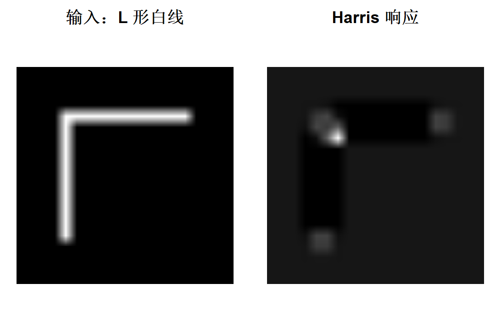
响应图里最亮的那个点就是拐角。白线的直边上响应接近 0——沿边的方向移动， 窗口里的内容几乎不变，所以不是角点。这正是「沿任意方向滑动都有较大变化」 那句话的直观含义。
注意
dst是CV_32F的，值域大约是[-0.02, 0.11]，不是 0–255。 上面那行cv_normalize()不能省：plot.cvMat只是把图交给as.raster()， 浮点图默认按max = 1解释，一旦有负值或超过 1 就直接报as.raster() needs values in [0, 1]。它不做任何自动归一化。 想画浮点图，要么自己归一化，要么显式给量程：plot(dst, max = 255)。
手算一遍，验证公式
上面那个 dst 到底是不是 \(R = det(M)-k\,trace(M)^2\)？自己算一遍就知道了。
#blockSize、ksize、k 沿用上面的值
#依据 blockSize、ksize 设置 scale
scale = 2^(ksize-1)*blockSize
#img 的 depth 为 CV_8U，scale 还需要再乘以 255
scale = scale*255
#取倒数
scale = 1/scale
#求水平方向导数、垂直方向导数
dx = cv_Sobel(img,CV_32F,1L,0L,scale = scale)
dy = cv_Sobel(img,CV_32F,0L,1L,scale = scale)
#把 Ix^2、IxIy、Iy^2 分别放进三个通道
cov = Mat(20,20,CV_32FC3)
cov[] = c(as_array(dx,numeric = TRUE)^2,
as_array(dx,numeric = TRUE)*as_array(dy,numeric = TRUE),
as_array(dy,numeric = TRUE)^2)
#对 cov 做归一化盒子滤波（就是那个滑动窗口的加权求和）
cov = cv_boxFilter(cov,-1L,c(blockSize,blockSize),normalize = FALSE)
#拆回数组，按 R = det(M) - k*trace(M)^2 计算
ca = as_array(cov,numeric = TRUE)
eigenv_mat = ca[,,1]*ca[,,3] - ca[,,2]^2 - k*(ca[,,1]+ca[,,3])^2
round(eigenv_mat[3:9,3:9],2)#> [,1] [,2] [,3] [,4] [,5] [,6] [,7]
#> [1,] 0 0.00 0.00 0.00 0.00 0.00 0.00
#> [2,] 0 0.00 0.00 0.00 -0.01 -0.01 -0.01
#> [3,] 0 0.00 0.02 0.02 0.00 -0.01 -0.01
#> [4,] 0 0.00 0.02 0.02 0.04 -0.01 -0.01
#> [5,] 0 -0.01 0.00 0.04 0.11 -0.01 -0.01
#> [6,] 0 -0.01 -0.01 -0.01 -0.01 0.00 0.00
#> [7,] 0 -0.01 -0.01 -0.01 -0.01 0.00 0.00#> [1] 1相关系数是 1——手算和 cv_cornerHarris 完全一致。这一步值得做，因为它同时验证了 scale 那个反直觉的系数、boxFilter 的窗口语义、以及三通道 cov[] <- 的通道顺序。
scale = 1/(2^(ksize-1) * blockSize * 255)这个式子是怎么来的？
Sobel在ksize=3时，卷积核的系数和是 \(2^{ksize-1}=4\)；boxFilter在blockSize=2时把 4 个像素相加，又放大 4 倍；CV_8U的输入最大 255。 三者相乘是响应的总放大倍数，取倒数正好抵消。少乘任何一个，手算结果就和cv_cornerHarris差一个常数因子——形状一样，数值对不上。
在真实图像上找角点
#读取图像文件
src = cv_imread("images/chessboard1.jpg")
#灰度化
src_gray = cv_cvtColor(src,COLOR_BGR2GRAY)
#使用 cornerHarris 检测角点
dst = cv_cornerHarris(src_gray,2L,3L,0.04)
#二值化：响应超过 0.1 的都置为 255，即把角点变成小白点
dst_bin = cv_threshold(dst,0.1,255,THRESH_BINARY)
#threshold 的输出跟输入同深度：输入是 CV_32F，输出还是 CV_32F。
#要当掩码用（或者直接 plot），转成 8 位更省事
dst_bin = cv_convertScaleAbs(dst_bin)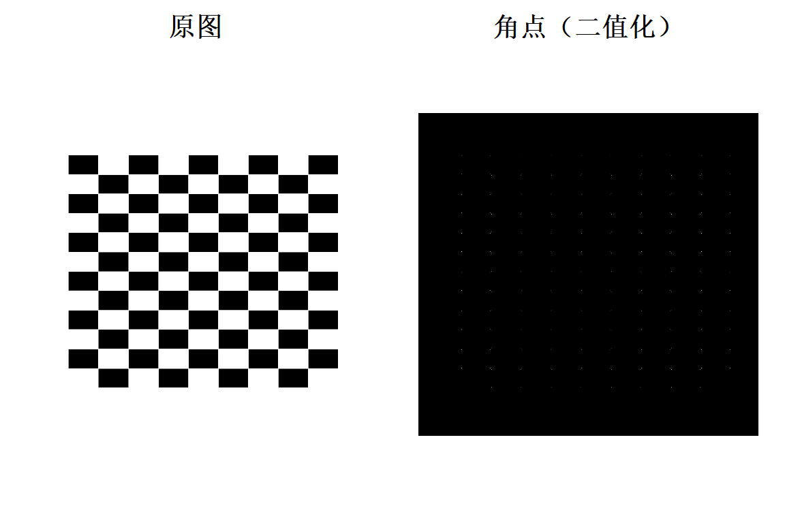
换一张建筑图，把角点用小圆圈标在原图上：
src = cv_imread("images/building1.jpg")
src_gray = cv_cvtColor(src,COLOR_BGR2GRAY)
dst = cv_cornerHarris(src_gray,2L,3L,0.04)
#把响应映射到 [0,255]，再转成 8 位无符号数，方便按阈值筛
dst_norm = cv_normalize(dst,alpha = 0,beta = 255,norm_type = NORM_MINMAX,dtype = CV_32FC1)
dst_norm_scaled = cv_convertScaleAbs(dst_norm)
#找出响应超过 200 的像素位置
dst_norm_mat = as_array(dst_norm,numeric = TRUE)
pos = which(dst_norm_mat > 200,arr.ind = TRUE)
nrow(pos)#> [1] 19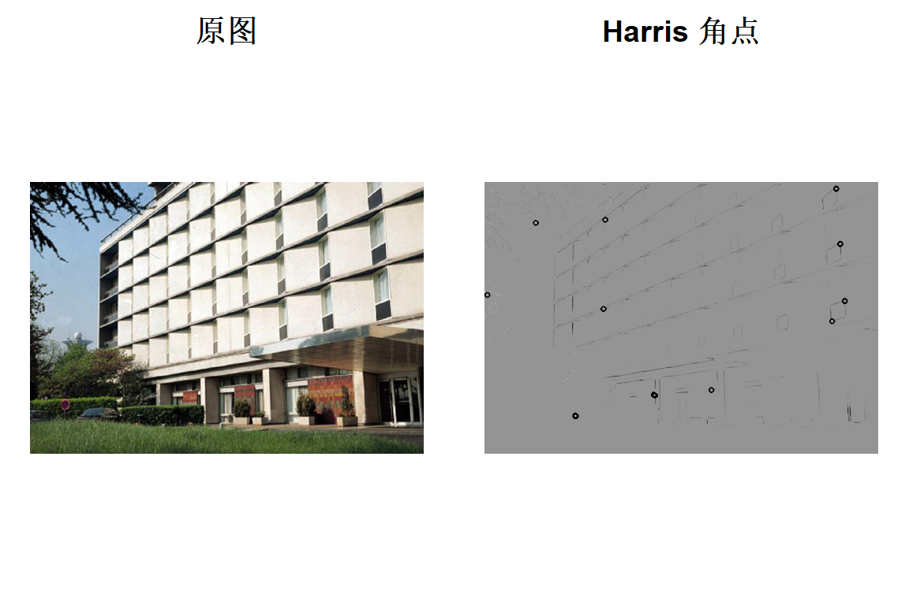
交互版：拖动滑动条调阈值
source_window = "Source image"
corners_window = "Corners detected"
src = cv_imread("images/building1.jpg")
src_gray = cv_cvtColor(src,COLOR_BGR2GRAY)
#滑动条的回调：val 是滑动条当前值
cornerHarris_demo = function(val){
#从滑动条读阈值
thresh = cv_getTrackbarPos("Threshold: ",source_window)
dst = cv_cornerHarris(src_gray,2L,3L,0.04)
dst_norm = cv_normalize(dst,alpha = 0,beta = 255,norm_type = NORM_MINMAX,dtype = CV_32FC1)
scaled = cv_convertScaleAbs(dst_norm)
pos = which(as_array(scaled,numeric = TRUE) > thresh,arr.ind = TRUE)
for(i in 1:nrow(pos)){
invisible(cv_circle(scaled,c(pos[i,2],pos[i,1]),5,c(0),2,LINE_8))
}
cv_imshow(corners_window,scaled)
}
cv_namedWindow(source_window)
cv_createTrackbar("Threshold: ",source_window,200,255,cornerHarris_demo)
cv_setTrackbarPos("Threshold: ",source_window,200)
cv_imshow(source_window,src)
cornerHarris_demo(0)把滑动条固定在 200，就是上面那段非交互代码做的事。想换个阈值，改那个 200 即可。
用 goodFeaturesToTrack 找 Harris 角点
cornerHarris 返回的是响应图，还得自己阈值化、自己找局部极大值。goodFeaturesToTrack 一步到位，直接给出角点坐标：
#最多找 100 个角点
maxCorners = 100
#角点最小品质：低于 max(响应)*qualityLevel 的会被舍去
qualityLevel = 0.03
#两个角点之间的最小距离
minDistance = 10
#权重窗口尺寸
blockSize = 3
#求导内核尺寸
gradientSize = 3
#TRUE 表示用 Harris，FALSE 表示用 Shi-Tomasi
useHarrisDetector = TRUE
#Harris 的灵敏度系数
k = 0.01
src = cv_imread("images/building1.jpg")
src_gray = cv_cvtColor(src,COLOR_BGR2GRAY)
#第 5 个参数是 mask，不用就给 NULL
corners = cv_goodFeaturesToTrack(src_gray,maxCorners,qualityLevel,minDistance,
NULL,blockSize,gradientSize,useHarrisDetector,k)
nrow(corners)#> [1] 100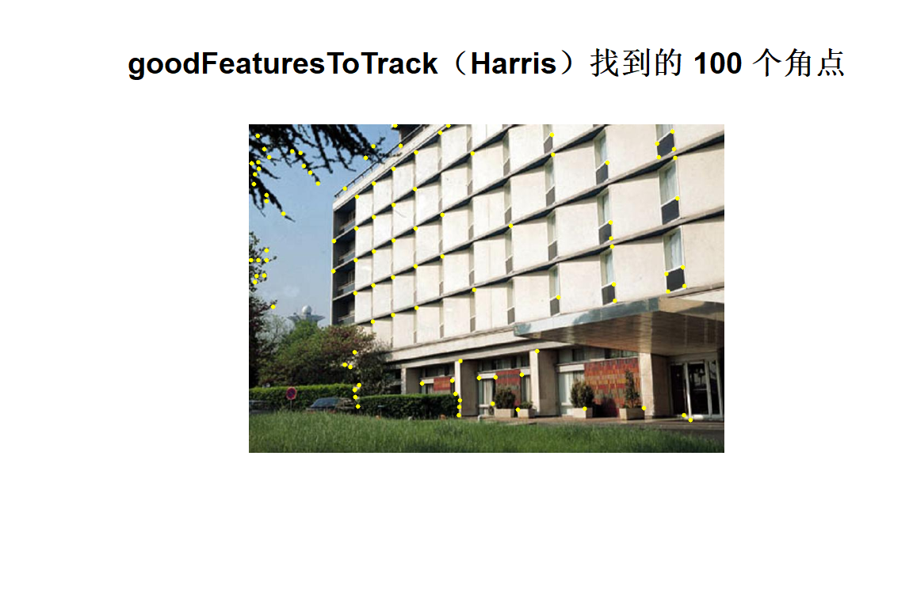
11.3 Shi-Tomasi角点探测器
把 useHarrisDetector 换成 FALSE，goodFeaturesToTrack 就改用 Shi-Tomasi 准则 （最小特征值）而不是 Harris 响应：
#最多找 30 个角点
maxCorners = 30
qualityLevel = 0.01
minDistance = 10
blockSize = 3
gradientSize = 3
#FALSE：用 Shi-Tomasi
useHarrisDetector = FALSE
k = 0.04
src = cv_imread("images/pic3.png")
src_gray = cv_cvtColor(src,COLOR_BGR2GRAY)
corners = cv_goodFeaturesToTrack(src_gray,maxCorners,qualityLevel,minDistance,
NULL,blockSize,gradientSize,useHarrisDetector,k)
xy = matrix(as_array(corners,numeric = TRUE),ncol = 2)
nrow(xy)#> [1] 30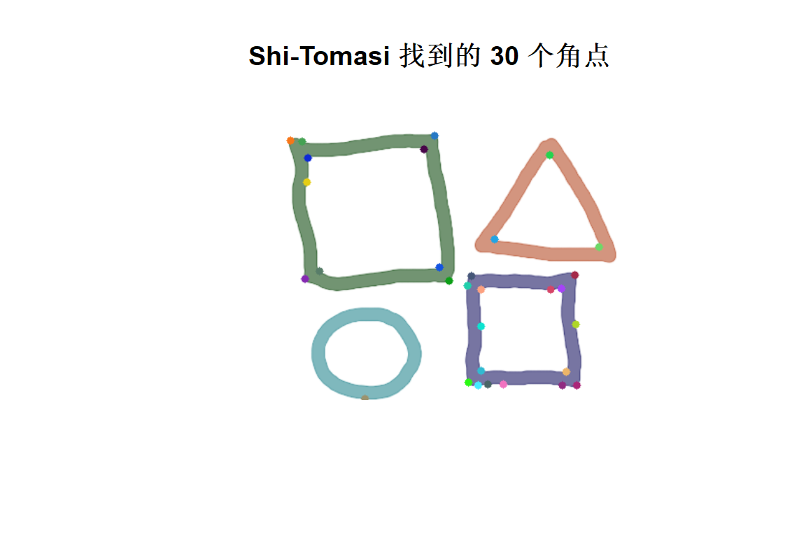
交互版：
qualityLevel = 0.01
minDistance = 10
blockSize = 3
gradientSize = 3
useHarrisDetector = FALSE
k = 0.04
src = cv_imread("images/chessboard1.jpg")
src_gray = cv_cvtColor(src,COLOR_BGR2GRAY)
goodFeaturesToTrack_Demo = function(val){
maxCorners = max(cv_getTrackbarPos("Max corners:","Image"),1)
corners = cv_goodFeaturesToTrack(src_gray,maxCorners,qualityLevel,minDistance,
NULL,blockSize,gradientSize,useHarrisDetector,k)
xy = matrix(as_array(corners,numeric = TRUE),ncol = 2)
#每次都从文件重读，相当于旧版的 src$clone()
src_clone = cv_imread("images/chessboard1.jpg")
for(i in 1:nrow(xy)){
invisible(cv_circle(src_clone,xy[i,],4,sample(0:255,3,replace = TRUE),-1))
}
cv_imshow("Image",src_clone)
}
cv_namedWindow("Image")
cv_createTrackbar("Max corners:","Image",23,255,goodFeaturesToTrack_Demo)
cv_setTrackbarPos("Max corners:","Image",23)
cv_imshow("Image",src)
goodFeaturesToTrack_Demo(0)11.4 通过cornerEigenValsAndVecs实现Harris角点检测
cv::cornerEigenValsAndVecs 可以计算 \(M\) 的特征值和特征向量，返回的结果为 6 维向量：
\[ (\lambda_1,\lambda_2,x_1,y_1,x_2,y_2) \]
其中：
\(\lambda_1, \lambda_2\) 为矩阵 \(M\) 的特征值；
\((x_1, y_1)\) 为矩阵 \(M\) 对应于 \(\lambda_1\) 的特征向量；
\((x_2, y_2)\) 为矩阵 \(M\) 对应于 \(\lambda_2\) 的特征向量。
OpenCV 将这 6 维向量存放在 6 通道图像矩阵中，这 6 个通道依次存放 \(\lambda_1\)、\(\lambda_2\)、\(x_1\)、\(y_1\)、\(x_2\) 和 \(y_2\)。
既然拿到了 \(\lambda_1\)、\(\lambda_2\)，就可以直接算 \(R = \lambda_1\lambda_2 - k(\lambda_1+\lambda_2)^2\)， 不必再调 cornerHarris：
src = cv_imread("images/building1.jpg")
src_gray = cv_cvtColor(src,COLOR_BGR2GRAY)
blockSize = 3
ksize = 3
k = 0.04
#计算 M 的特征值和特征向量：6 个通道
myHarris_dst = cv_cornerEigenValsAndVecs(src_gray,blockSize,ksize)
dim(myHarris_dst)#> [1] 600 868 6#> min max
#> -0.005184 0.010007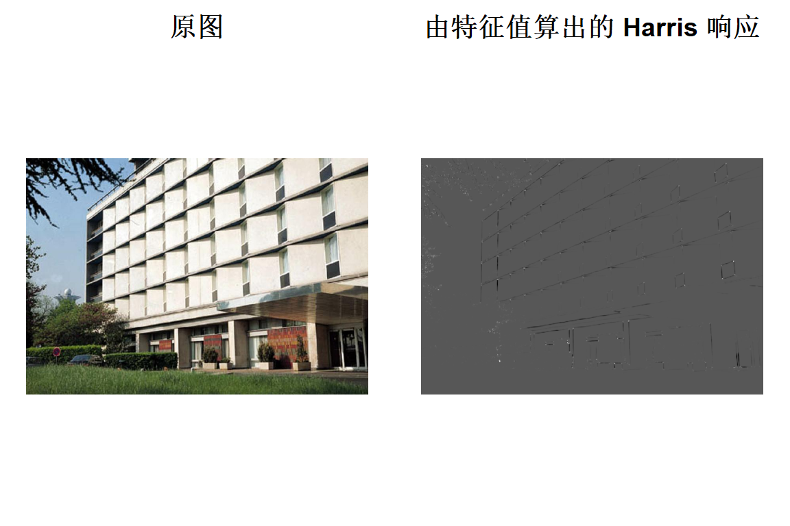
把响应超过「品质线」的像素标出来。品质线定义为：
\[ \text{threshold} = minVal + (maxVal - minVal)\times\frac{qualityLevel}{maxQualityLevel} \]
#> [1] 0.002412#> [1] 239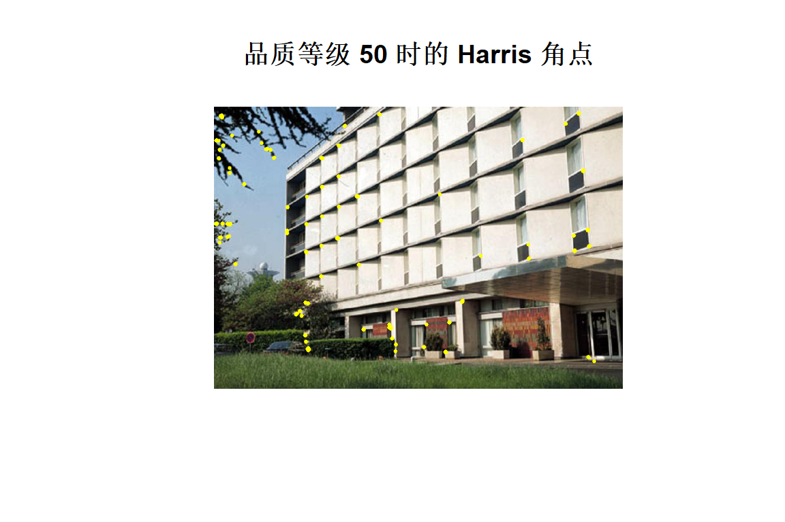
交互版
max_qualityLevel = 100
myHarris_window = "My Harris corner detector"
src = cv_imread("images/building1.jpg")
src_gray = cv_cvtColor(src,COLOR_BGR2GRAY)
myHarris_dst = cv_cornerEigenValsAndVecs(src_gray,3L,3L)
hv = as_array(myHarris_dst,numeric = TRUE)
Mc_mat = hv[,,1]*hv[,,2] - 0.04*(hv[,,1]+hv[,,2])^2
myHarris_minVal = min(Mc_mat)
myHarris_maxVal = max(Mc_mat)
myHarris_function = function(val){
q = max(cv_getTrackbarPos("Quality Level:",myHarris_window),1)
clone = cv_imread("images/building1.jpg")
th = myHarris_minVal + (myHarris_maxVal-myHarris_minVal)*q/max_qualityLevel
pos = which(Mc_mat > th,arr.ind = TRUE)
for(i in 1:nrow(pos)){
invisible(cv_circle(clone,c(pos[i,2],pos[i,1]),4,c(0,255,255),-1))
}
cv_imshow(myHarris_window,clone)
}
cv_namedWindow(myHarris_window)
cv_createTrackbar("Quality Level:",myHarris_window,50,max_qualityLevel,myHarris_function)
cv_setTrackbarPos("Quality Level:",myHarris_window,50)
myHarris_function(0)11.5 通过cornerMinEigenVal实现ShiTomasi角点检测
Shi-Tomasi 的准则更简单：角点响应就是 \(M\) 的最小特征值 \(\lambda_{min}\)。
#> min max
#> -9.095e-13 8.504e-02max_qualityLevel = 100
myShiTomasi_minVal = min(st)
myShiTomasi_maxVal = max(st)
myShiTomasi_qualityLevel = 50
thresh = myShiTomasi_minVal + (myShiTomasi_maxVal-myShiTomasi_minVal)*myShiTomasi_qualityLevel/max_qualityLevel
src_marked = cv_imread("images/building1.jpg")
pos = which(st > thresh,arr.ind = TRUE)
nrow(pos)#> [1] 72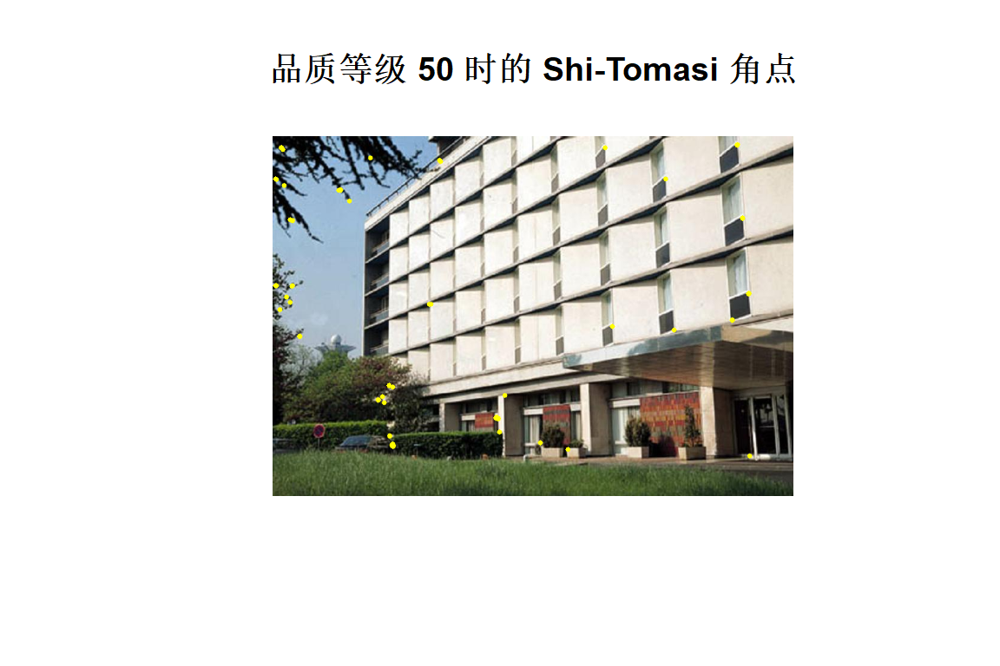
交互版
myShiTomasi_window = "My Shi Tomasi corner detector"
src = cv_imread("images/building1.jpg")
src_gray = cv_cvtColor(src,COLOR_BGR2GRAY)
myShiTomasi_dst = cv_cornerMinEigenVal(src_gray,3L,3L)
st = as_array(myShiTomasi_dst,numeric = TRUE)
mn = min(st); mx = max(st)
max_qualityLevel = 100
myShiTomasi_function = function(val){
q = max(cv_getTrackbarPos("Quality Level:",myShiTomasi_window),1)
clone = cv_imread("images/building1.jpg")
pos = which(st > mn + (mx-mn)*q/max_qualityLevel,arr.ind = TRUE)
for(i in 1:nrow(pos)){
invisible(cv_circle(clone,c(pos[i,2],pos[i,1]),4,c(0,255,255),-1))
}
cv_imshow(myShiTomasi_window,clone)
}
cv_namedWindow(myShiTomasi_window)
cv_createTrackbar("Quality Level:",myShiTomasi_window,50,max_qualityLevel,myShiTomasi_function)
cv_setTrackbarPos("Quality Level:",myShiTomasi_window,50)
myShiTomasi_function(0)11.6 亚像素角点检测
goodFeaturesToTrack 检出的角点是像素级的——坐标是整数。想要更精细的坐标， 就用 cornerSubPix 在初值附近做迭代优化，把精度提到亚像素级。
src = cv_imread("images/box_in_scene.png")
src_gray = cv_cvtColor(src,COLOR_BGR2GRAY)
qualityLevel = 0.01
minDistance = 10
blockSize = 3
gradientSize = 3
useHarrisDetector = FALSE
k = 0.04
#先检出像素级角点
corners = cv_goodFeaturesToTrack(src_gray,10L,qualityLevel,minDistance,
NULL,blockSize,gradientSize,useHarrisDetector,k)
xy_before = matrix(as_array(corners,numeric = TRUE),ncol = 2)
#计算亚像素角点时考虑的区域
winSize = c(5,5)
#零区域：c(-1,-1) 表示忽略
zeroZone = c(-1,-1)
#迭代终止条件
criteria = c(EPS+COUNT,40,0.001)
#细化
corners_sub = cv_cornerSubPix(src_gray,corners,winSize,zeroZone,criteria)
xy_after = matrix(as_array(corners_sub,numeric = TRUE),ncol = 2)#> before_x after_x before_y after_y dx dy
#> [1,] 107 106.2 271 271.2 -0.842 0.189
#> [2,] 274 274.0 380 380.0 0.000 0.000
#> [3,] 310 311.8 231 230.7 1.803 -0.299
#> [4,] 294 296.7 242 245.8 2.701 3.793
#> [5,] 288 288.0 369 369.0 0.000 0.000
#> [6,] 284 283.4 177 174.4 -0.567 -2.625
#> [7,] 302 302.0 171 171.0 0.000 0.000
#> [8,] 141 141.0 232 232.0 0.000 0.000
#> [9,] 192 193.2 324 320.4 1.162 -3.590
#> [10,] 331 333.2 216 214.3 2.207 -1.737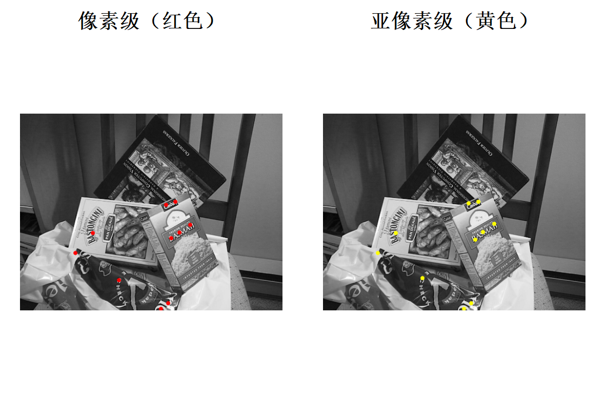
像素级和亚像素级点的位移量通常在 0.1–0.5 像素之间。肉眼看两张图几乎一样，但坐标差这一点， 在相机标定和三维重建里会被放大——这也是第八章里标定之前必须先跑
cornerSubPix的原因。
交互版：
source_window = "Image"
maxTrackbar = 25
src = cv_imread("images/box_in_scene.png")
src_gray = cv_cvtColor(src,COLOR_BGR2GRAY)
goodFeaturesToTrack_Demo = function(val){
maxCorners = max(cv_getTrackbarPos("Max corners:",source_window),1)
corners = cv_goodFeaturesToTrack(src_gray,maxCorners,0.01,10,NULL,3L,3L,FALSE,0.04)
xy = matrix(as_array(corners,numeric = TRUE),ncol = 2)
clone = cv_imread("images/box_in_scene.png")
for(i in 1:nrow(xy)){
invisible(cv_circle(clone,xy[i,],4,c(0,0,255),-1))
}
cv_imshow(source_window,clone)
#再算一遍亚像素，打印出来
refined = cv_cornerSubPix(src_gray,corners,c(5,5),c(-1,-1),c(EPS+COUNT,40,0.001))
xy_ref = matrix(as_array(refined,numeric = TRUE),ncol = 2)
for(i in 1:nrow(xy_ref)){
cat(" -- Refined Corner [",i,"] (",round(xy_ref[i,1],3),",",round(xy_ref[i,2],3),")\n")
}
}
cv_namedWindow(source_window)
cv_createTrackbar("Max corners:",source_window,10,maxTrackbar,goodFeaturesToTrack_Demo)
cv_setTrackbarPos("Max corners:",source_window,10)
cv_imshow(source_window,src)
goodFeaturesToTrack_Demo(0)11.7 FeatureDetector关键点检测
从这一节开始进入 feature2d 的「检测子 + 描述子」框架。所有检测器的用法都一样：
#读图
src_box = cv_imread("images/box_in_scene.png")
#创建 FAST 检测器
detector = cvFastFeatureDetector()
#检测关键点：第二个参数是 mask，不用就给 NULL
keypoints = detector$detect(src_box)
nrow(keypoints)#> [1] 4066head(keypoints,3)#> x y size angle response octave class_id
#> 1 262 3 7 -1 16 0 -1
#> 2 264 3 7 -1 14 0 -1
#> 3 433 3 7 -1 10 0 -1img_keypoints_fast = cv_drawKeypoints(src_box,keypoints)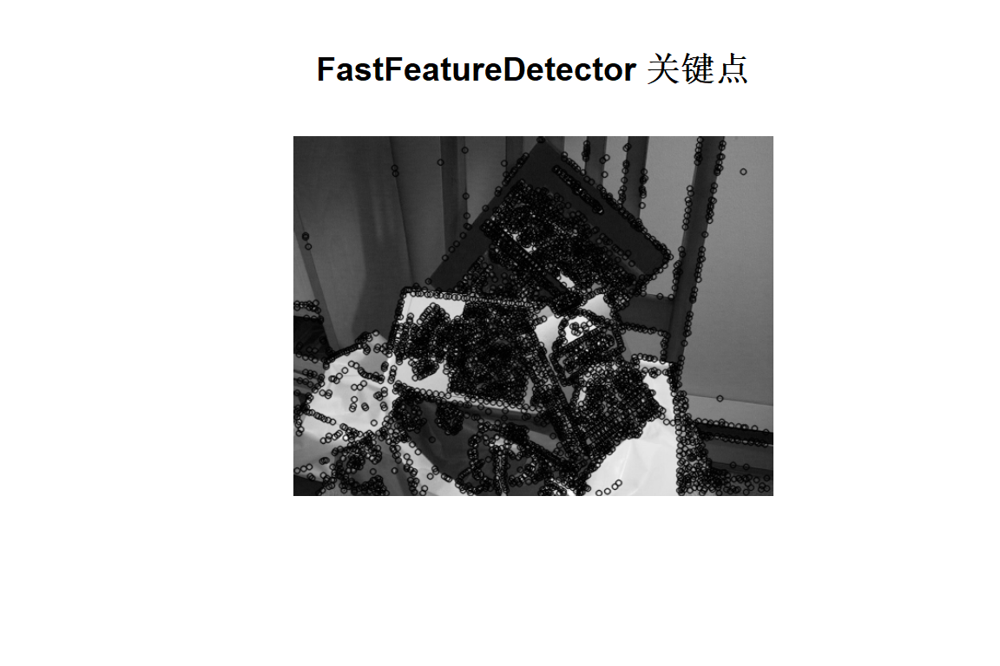
关键点是一张 data.frame，7 列：
列 含义 x,y坐标（可能带小数） size特征点邻域直径 angle方向， -1表示没有方向（FAST/ORB 之外的检测器多半是 -1）response响应强度，可用于排序筛选 octave所在金字塔层级 class_id检测器内部用的分类号 有了 data.frame 就能直接排序、筛选，比如只要响应最强的 100 个：
keypoints[order(-keypoints$response),][1:100,]。
11.8 ORB关键点检测
detector = cvORB()
keypoints_orb = detector$detect(src_box)
nrow(keypoints_orb)#> [1] 500img_keypoints_orb = cv_drawKeypoints(src_box,keypoints_orb)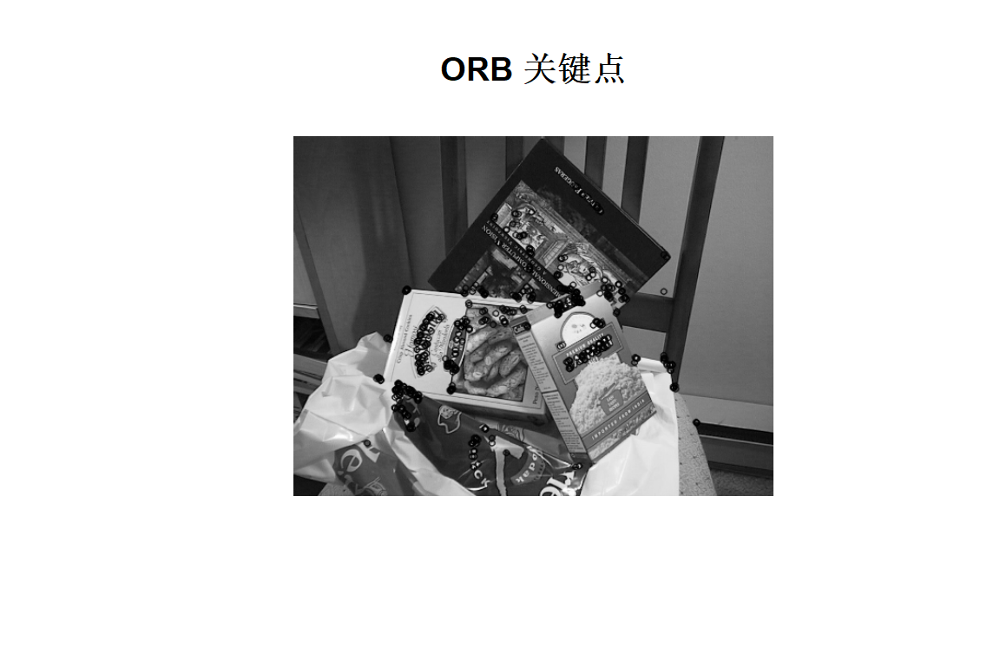
11.9 SURF关键点检测
#minHessian 越大，检出的点越少、越稳定
minHessian = 400
detector = cvSURF(minHessian)
keypoints_surf = detector$detect(src_box)
nrow(keypoints_surf)#> [1] 1040img_keypoints_surf = cv_drawKeypoints(src_box,keypoints_surf)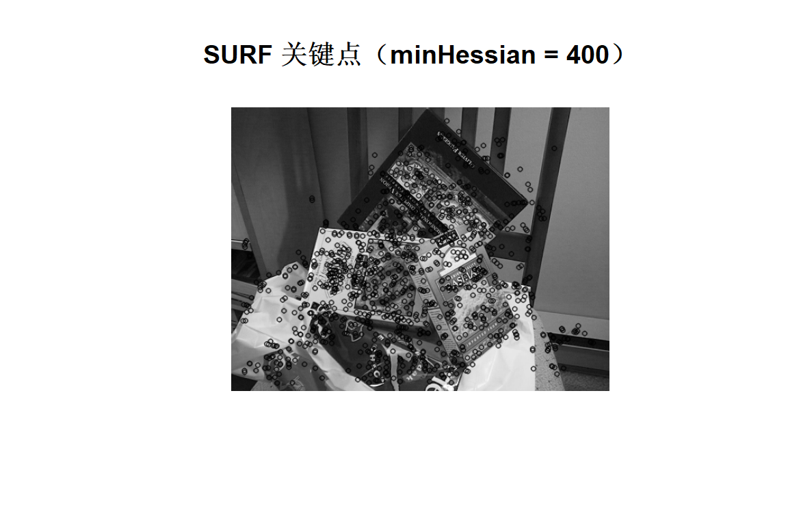
11.10 SIFT关键点检测
detector = cvSIFT()
keypoints_sift = detector$detect(src_box)
nrow(keypoints_sift)#> [1] 969img_keypoints_sift = cv_drawKeypoints(src_box,keypoints_sift)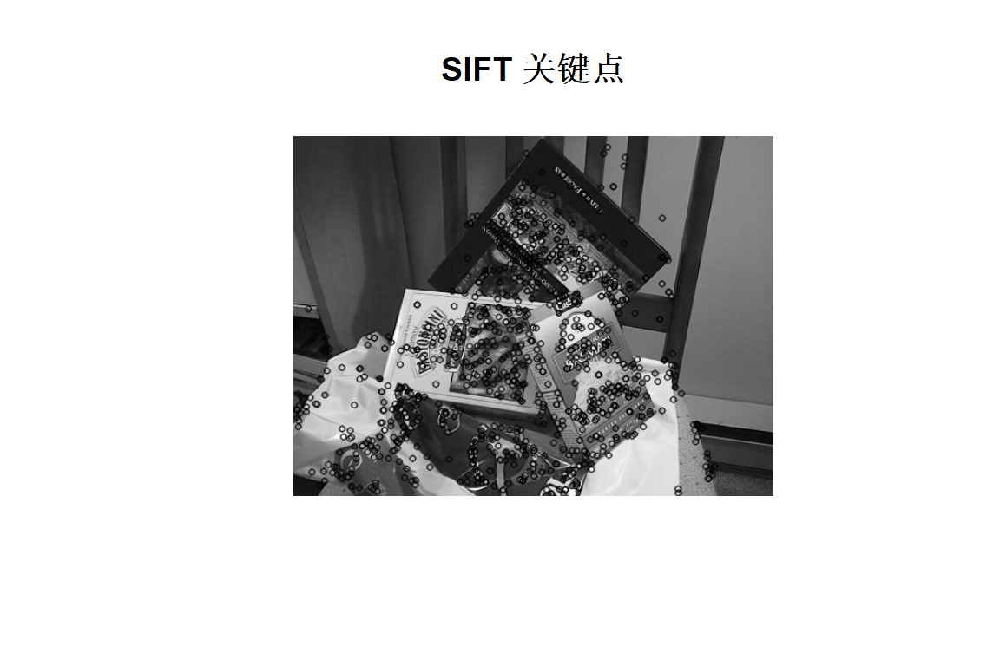
四种检测器检出数量的对比：
| 检测器 | 关键点数 |
|---|---|
| FAST | 4066 |
| ORB | 500 |
| SURF | 1040 |
| SIFT | 969 |
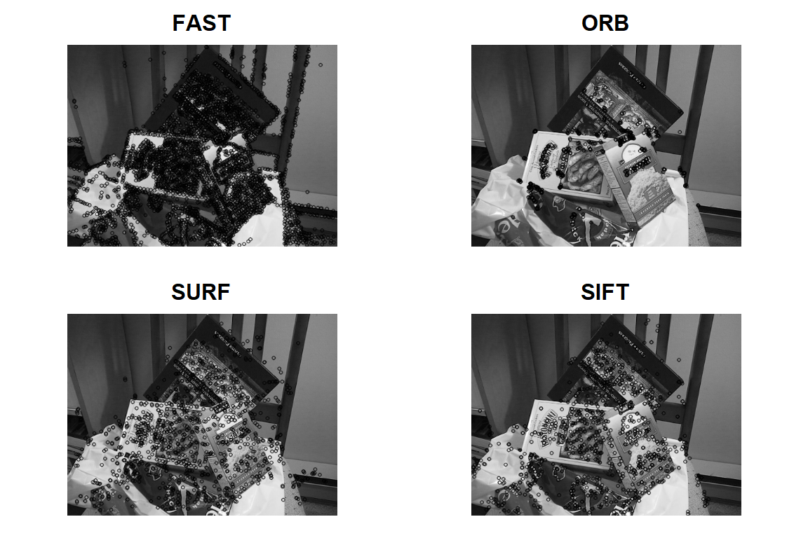
11.11 基于BFMatcher的特征匹配
匹配分两步：先各自算描述子，再两两比对。
#读成灰度图，特征检测不需要颜色
img1 = cv_imread("images/box.png",IMREAD_GRAYSCALE)
img2 = cv_imread("images/box_in_scene.png",IMREAD_GRAYSCALE)
detector = cvSURF(400)
#检测 + 计算描述子，一次调用返回两样东西
r1 = detector$detectAndCompute(img1,NULL)
r2 = detector$detectAndCompute(img2,NULL)
names(r1)#> [1] "keypoints" "descriptors"nrow(r1$keypoints)#> [1] 786dim(r1$descriptors)#> [1] 786 64#创建暴力匹配器（逐个比对，O(n1*n2)）
matcher = cvBFMatcher()
#match 只给每个 query 一个最佳匹配
matches = matcher$match(r1$descriptors,r2$descriptors)
nrow(matches)#> [1] 786head(matches,3)#> queryIdx trainIdx imgIdx distance
#> 1 0 1022 0 0.3207
#> 2 1 247 0 0.3709
#> 3 2 351 0 0.3471img_matches = cv_drawMatches(img1,r1$keypoints,img2,r2$keypoints,matches)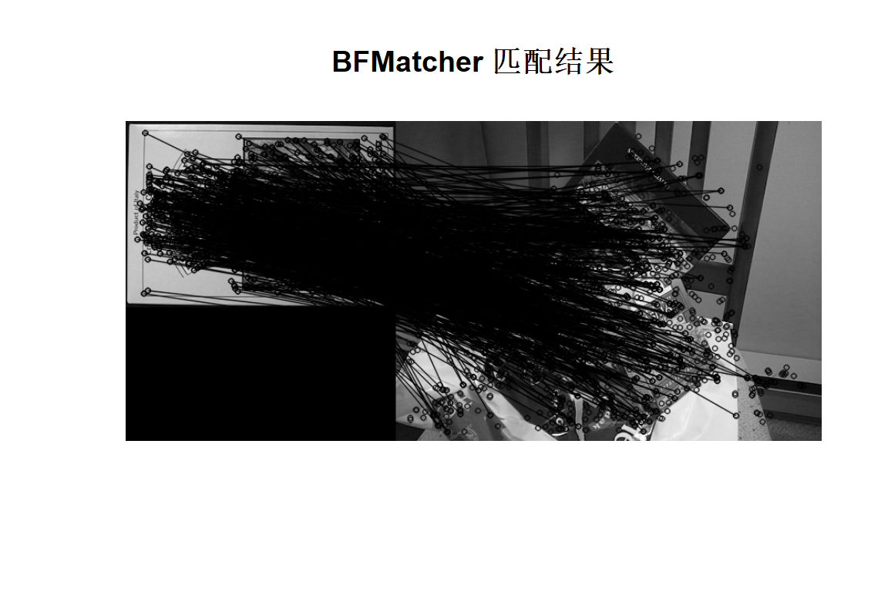
11.12 基于FLANN的特征匹配
BFMatcher 是穷举，特征点多的时候很慢。FLANN 用近似最近邻，快得多，代价是 可能漏掉极少数真正的最近邻。
这里用 knnMatch 取每个点的前 2 个最近邻，再用 Lowe’s ratio test 筛：
img1 = cv_imread("images/box.png",IMREAD_GRAYSCALE)
img2 = cv_imread("images/box_in_scene.png",IMREAD_GRAYSCALE)
detector = cvSURF(400)
r1 = detector$detectAndCompute(img1,NULL)
r2 = detector$detectAndCompute(img2,NULL)
#FLANN 匹配器
matcher = cvFlannBasedMatcher()
#每个 query 取最近的 2 个
knn = matcher$knnMatch(r1$descriptors,r2$descriptors,2L)
length(knn)#> [1] 786knn[[1]]#> queryIdx trainIdx imgIdx distance
#> 1 0 1022 0 0.3207
#> 2 0 985 0 0.3331#> [1] 65img_matches = cv_drawMatches(img1,r1$keypoints,img2,r2$keypoints,good_matches,
flags = NOT_DRAW_SINGLE_POINTS)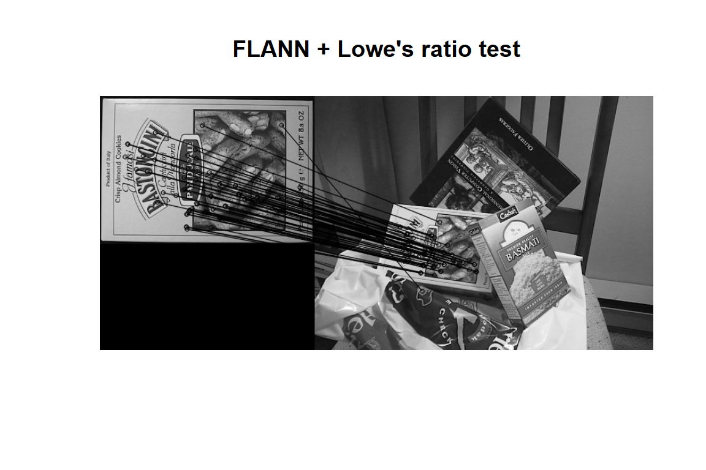
Lowe’s ratio test 的逻辑：如果最近邻距离
d1和次近邻d2差不多 （d1/d2接近 1），说明这个点有好几个同样像的候选，匹配不可靠，丢掉。 只有d1 < 0.7 * d2才留下。0.7 是 经验值。
11.13 结合单应矩阵定位目标
思路：用匹配上的点对算出单应矩阵 \(H\)，再把 box.png 的四个角点变换到场景图里， 框出来就是目标位置。
img_object = cv_imread("images/box.png")
img_scene = cv_imread("images/box_in_scene.png")
detector = cvSIFT(edgeThreshold = 40)
ro = detector$detectAndCompute(img_object,NULL)
rs = detector$detectAndCompute(img_scene,NULL)
matcher = cvFlannBasedMatcher()
knn = matcher$knnMatch(ro$descriptors,rs$descriptors,2L)
ratio_thresh = 0.7
good_matches = do.call(rbind,lapply(knn,function(p){
if(nrow(p) >= 2 && p$distance[1] < ratio_thresh*p$distance[2]) p[1,] else NULL
}))
nrow(good_matches)#> [1] 87#> [1] 87 2#点多于 4 个，用 findHomography（RANSAC），不用 getPerspectiveTransform
H = cv_findHomography(pts2f_local(obj_pts),pts2f_local(scene_pts),method = RANSAC)
round(as_array(H,numeric = TRUE),4)#> [,1] [,2] [,3]
#> [1,] 0.4391 -0.1648 119.0
#> [2,] -0.0019 0.4012 161.3
#> [3,] -0.0003 -0.0004 1.0
#> attr(,"depth")
#> [1] 6#> [,1] [,2]
#> [1,] 119.0 161.3
#> [2,] 284.8 175.1
#> [3,] 268.2 298.7
#> [4,] 89.5 272.6#画匹配图，再在场景图那一侧画框
img_matches = cv_drawMatches(img_object,ro$keypoints,img_scene,rs$keypoints,good_matches)
#drawMatches 把两张图左右拼在一起，场景图整体右移了 img_object 的宽度
offset = obj_info[2]
for(i in 1:4){
a = scene_corners[i,] + c(offset,0)
b = scene_corners[if(i == 4) 1 else i+1,] + c(offset,0)
img_matches = cv_line(img_matches,a,b,c(0,255,0),4)
}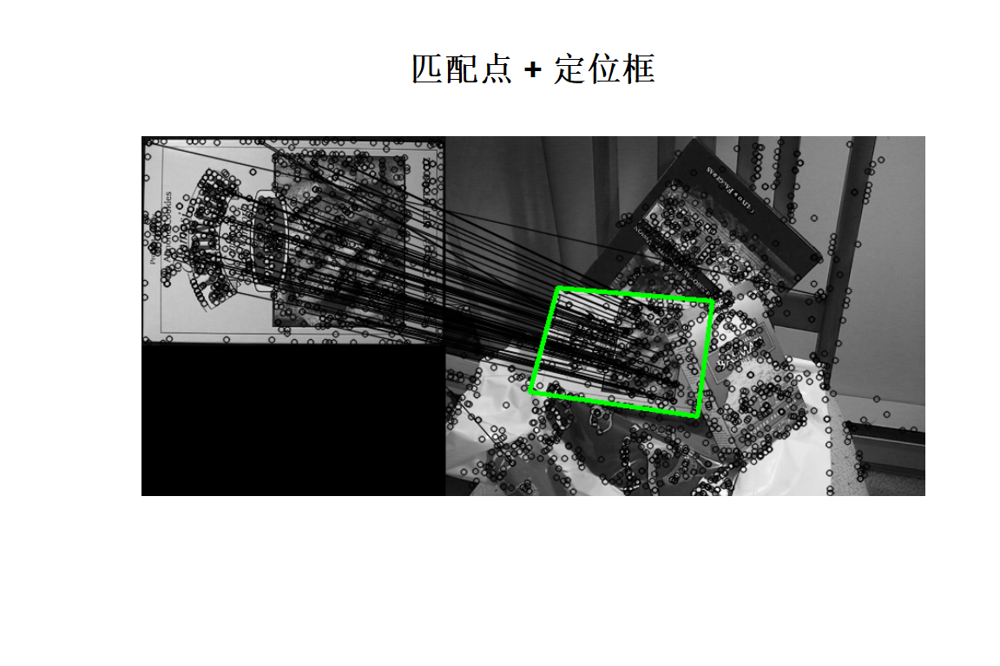
上面用到了本章开头定义的
pts2f_local()——它和第八章的pts2f()是同一个东西。
11.14 AKAZE局部特征匹配
AKAZE 是二值描述子，所以匹配器要用 NORM_HAMMING（汉明距离），不能用 L2。 这个例子还多做了一步「几何校验」：用给定的单应矩阵把匹配点投影过去， 距离超过阈值的才算内点。
inlier_threshold = 2.5 #判断内点的距离阈值
nn_match_ratio = 0.8 #最近邻比率
img1 = cv_imread("images/graf1.png",IMREAD_GRAYSCALE)
img2 = cv_imread("images/graf3.png",IMREAD_GRAYSCALE)
#给定的单应矩阵（两张图之间的真实关系）
homography = matrix(c(
0.76285898, -0.29922929, 225.67123,
0.33443473, 1.0143901, -76.999973,
0.00034663091, -0.000014364524, 1.0000000
),nr = 3,nc = 3,byrow = TRUE)
akaze = cvAKAZE()
k1 = akaze$detectAndCompute(img1,NULL)
k2 = akaze$detectAndCompute(img2,NULL)
c(kp1 = nrow(k1$keypoints),kp2 = nrow(k2$keypoints))#> kp1 kp2
#> 2418 2884#> [1] 382#几何校验：把 img1 的点按 homography 投影到 img2，看落点离匹配点多远
p1 = cbind(k1$keypoints$x[matched$queryIdx+1],k1$keypoints$y[matched$queryIdx+1])
p2 = cbind(k2$keypoints$x[matched$trainIdx+1],k2$keypoints$y[matched$trainIdx+1])
#齐次坐标：n×3，最后一列补 1
ph = cbind(p1,1) %*% t(homography)
#除以第三维，回到像素坐标
proj = ph[,1:2] / ph[,3]
ddist = sqrt((proj[,1]-p2[,1])^2 + (proj[,2]-p2[,2])^2)
inlier = ddist < inlier_threshold
c(matches = nrow(matched),inliers = sum(inlier),
inlier_ratio = round(mean(inlier),3))#> matches inliers inlier_ratio
#> 382.000 267.000 0.699#只保留内点，重编号后画出来
inl1 = matched$queryIdx[inlier] + 1
inl2 = matched$trainIdx[inlier] + 1
good = data.frame(queryIdx = seq_along(inl1)-1,
trainIdx = seq_along(inl2)-1,
imgIdx = 0,
distance = 0)
res = cv_drawMatches(img1,k1$keypoints[inl1,],img2,k2$keypoints[inl2,],good)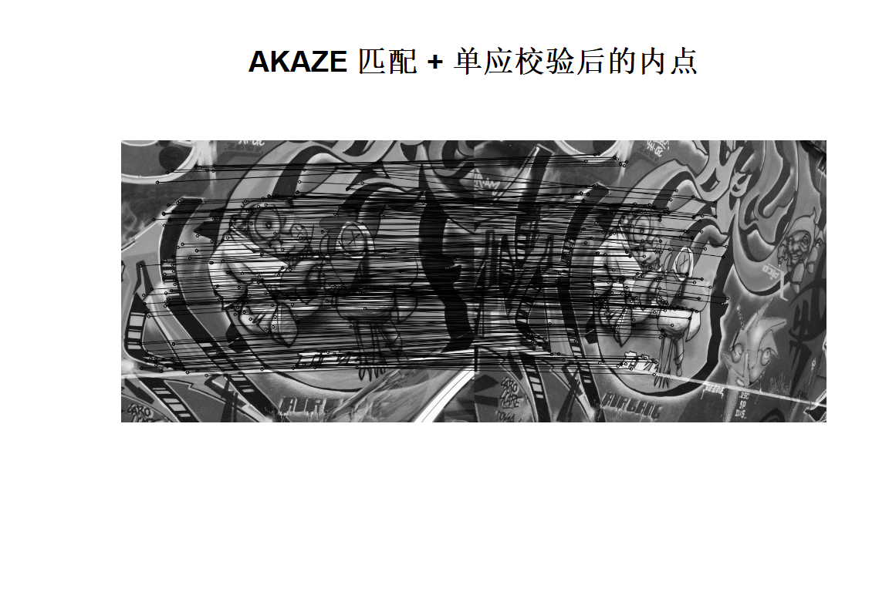
11.15 AKAZE和ORB平面跟踪
后面再找资料补充。
11.16 基于HOGDescriptor的平面目标检测
HOG（方向梯度直方图）+ 线性 SVM 是经典的行人检测方案。OpenCV 自带一个 用大量行人样本训练好的检测器。
img = cv_imread("images/flagtrain.jpg")
#HOGDescriptor 必须显式给 histogramNormType（默认值在 R 侧没接上）
hog = cvHOGDescriptor(histogramNormType = 0)
#关键一步：把 OpenCV 自带的「行人」线性 SVM 装进去
hog$setSVMDetector(cvHOGDescriptor_getDefaultPeopleDetector())
#多尺度检测
found = hog$detectMultiScale(img)
str(found)#> List of 2
#> $ foundLocations: int [1:5, 1:4] 398 274 14 218 106 164 146 164 160 234 ...
#> $ foundWeights : num [1:5] 0.943 0.0382 0.5858 0.692 0.4063#foundLocations 是 n×4 的矩阵，每行一个 c(x, y, w, h)
dim(found$foundLocations)#> [1] 5 4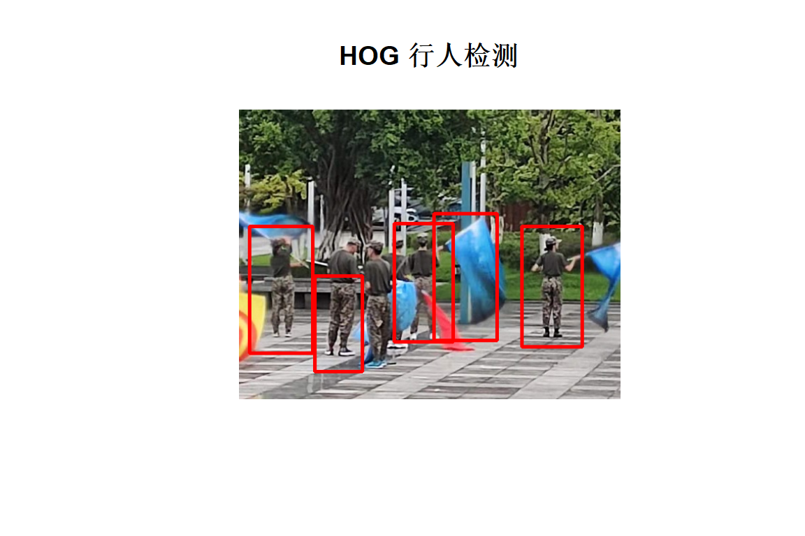